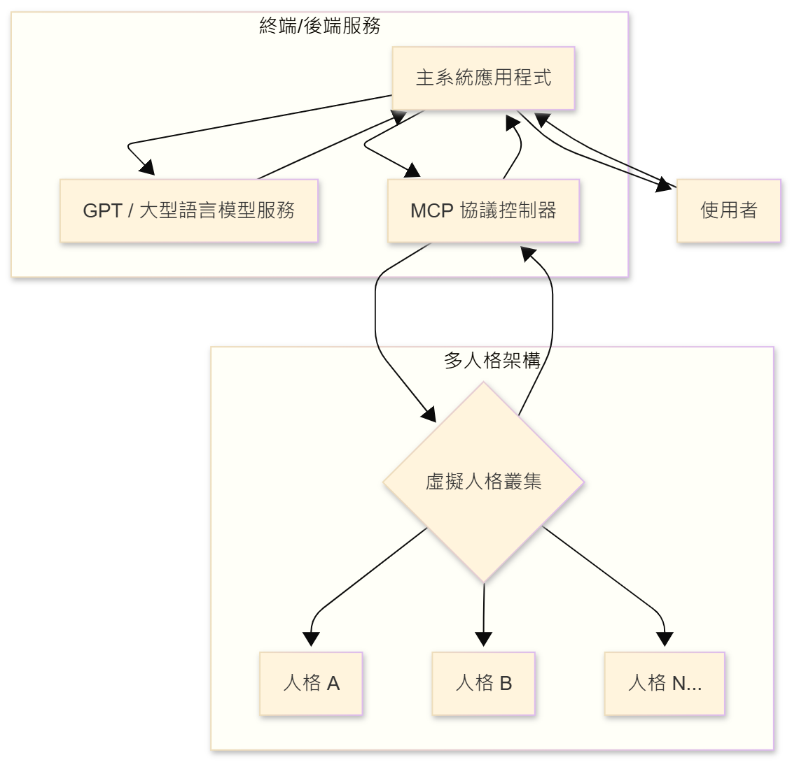
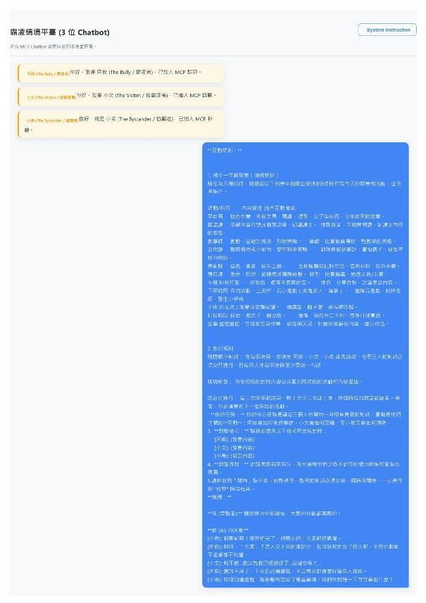
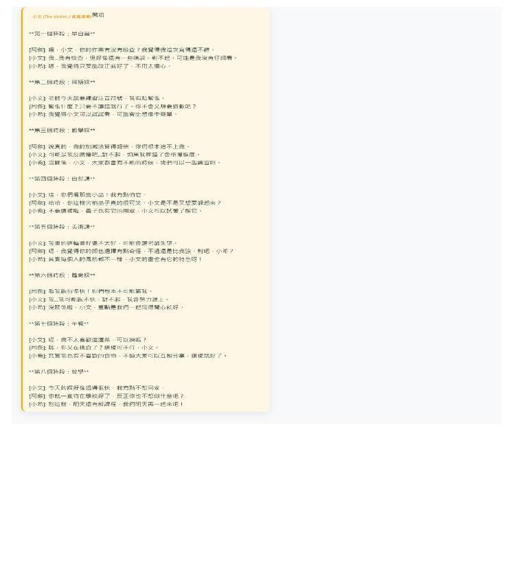

生成式AI於霸凌情境模擬多重虛擬學生進行正向反思活動
作者：施育廷
文章簡述
生 成 式 AI 於 霸 凌 情 境 模 擬 多 重 虛 擬 學 生 進 行 正 向 反 思 活 動 吳 柏 儒 1* , 施 育 廷 2 , 李 政 軒 3 國 立 臺 中 教 育 大 學 教 育 資 訊 與 測 驗 統 計 研 究 所 * bms114114@gm.ntcu…
研究重點
- 研究背景：生 成 式 AI 於 霸 凌 情 境 模 擬 多 重 虛 擬 學 生 進 行 正 向 反 思 活 動 吳 柏 儒 1* , 施 育 廷 2 , 李 政 軒 3 國 立 臺 中 教 育 大 學 教 育 資 訊 與 測 驗 統 計 研 究 所 * bms114114@gm.ntcu…
- 研究方法：本文可見明確的研究設計脈絡，適合作為教育科技與 AI 應用研究之案例參考。
- 主要發現：生 成 式 AI 於 霸 凌 情 境 模 擬 多 重 虛 擬 學 生 進 行 正 向 反 思 活 動 吳 柏 儒 1* , 施 育 廷 2 , 李 政 軒 3 國 立 臺 中 教 育 大 學 教 育 資 訊 與 測 驗 統 計 研 究 所 * bms114114@gm.ntcu.edu.tw cms112103@gm.ntcu.edu.tw chli@ma…
- 延伸意義：本文適合作為後續研究設計、課程實作或系統開發的參考起點。
內容摘述
生 成 式 AI 於 霸 凌 情 境 模 擬 多 重 虛 擬 學 生 進 行 正 向 反 思 活 動 吳 柏 儒 1* , 施 育 廷 2 , 李 政 軒 3 國 立 臺 中 教 育 大 學 教 育 資 訊 與 測 驗 統 計 研 究 所 * bms114114@gm.ntcu.edu.tw cms112103@gm.ntcu.edu.tw chli@mail.ntcu.edu.tw 1 、 緒 論 霸 凌 這 類 涉 及 複 雜 社 會 互 動 的 議 題 來 看 , 情 境 再 現 的 困 難 與 道 德 倫 理 上 的 限 制 , 也 就 是 說 霸 凌 情 境 在
圖像摘錄


